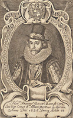
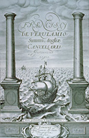

Francis Bacon (1561-1626), war engl. Philosoph, Staatsmann, und ein Pionier des wissenschaftlichen Denkens. Unter dem Einfluss seines Werkes "Novum Organum" übernahm die Wissenschaft die Methode der genauen Beobachtung und des Experiments. In seiner unvollendeten Utopie NOVA ATLANTIS stößt die Besatzung eines Schiffes aus Peru auf eine unbekannte Insel namens Bensalem. Die Einwohner der Insel leben in einem idealen Staat, der sich durch Vernunft und Toleranz auszeichnet. Auch in den Wissenschaften sind die Inselbewohner ihrer damaligen Zeit weit voraus. Sie führen medizinische Tierversuche zum Wohle der Menschen durch. Es gibt Erfindungen, die Bewegungsarten von Menschen und Tieren imitieren. Unterseeboote, Perpetuum Mobile und Hologramme werden beschrieben. Die Obstplantagen betreiben Gentechnik. Wärme wird durch die Bewegung von Maschinen, durch Sonnenstrahlung oder unterirdisch gewonnen. Bacon beschreibt vor über 300 Jahren Dinge, die zu unserem Alltag gehören oder gerade entwickelt werden.